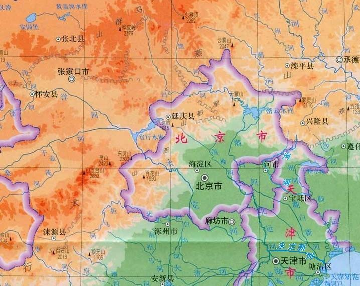

|
地形地貌
北京市山区面积10200平方千米，约占总面积的62%，平原区面积为6200平方千米，约占总面积的38%。北京的地形西北高，东南低。北京市平均海拔43.5米。北京平原的海拔高度在20～60米，山地一般海拔1000～1500米。北京西部为西山属太行山脉；北部和东北部为军都山属燕山山脉。最高的山峰为京西门头沟区的东灵山，海拔2303米。最低的地面为通州区东南边界。两山在南口关沟相交，形成一个向东南展开的半圆形大山弯，人们称之为“北京弯”，它所围绕的小平原即为北京小平原。诚如古人所言：“幽州之地，左环沧海，右拥太行，北枕居庸，南襟河济，诚天府之国”。
|